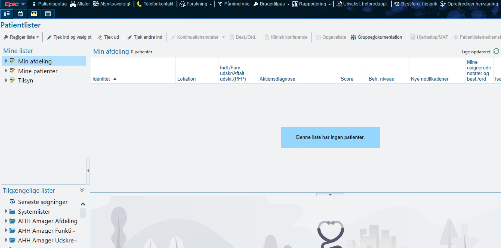

Blood tests blood_test
Laboratory results collected across paginated tables, including reverse page navigation.
An open-source automation suite that turns Epic EHR chart review into structured, research-ready datasets. Seven clinical data categories per patient. One command. Everything stays on your machine.
Clinical research teams spend enormous time opening charts, switching tabs, copying tables, and pasting them into spreadsheets. Every extra patient adds minutes of repetitive work — and every manual copy adds a chance of error.
This project removes that loop. It is a Windows desktop automation suite that operates the Epic EHR client the same way a trained user would: search for a patient, open the chart, extract seven categories of clinical data, save each to a structured file, close the chart, and move to the next patient.
Everything runs locally. If a run stops midway, it resumes where it left off. The output is a clean, consistent folder of Excel workbooks and PDF notes per patient — ready for analysis, auditing, or registry building.
The value is not just speed. It is consistency: the same fields, the same format, the same rules — for every patient, every run, without transcription drift.
No fragile integrations and no server dependencies. The suite drives the same screens a clinician sees, using computer vision to find interface elements and clipboard operations to move structured text.
CPR numbers are loaded from a single Excel column and validated before anything runs.
The orchestrator opens the chart using the same search flow a user performs.
Each module clicks, copies, scrolls, and parses its own category of clinical data.
Excel workbooks and PDF notes are written into a per-patient folder.
The chart closes, the next patient begins. Existing files are skipped on reruns.
Every module is independent and pluggable. Run the full suite, or call a single extractor when you only need one category.
blood_testLaboratory results collected across paginated tables, including reverse page navigation.
pato_bankPathology reports located by REKV number, with OCR and fuzzy matching for dynamic text.
notaterClinical notes exported through the print pipeline straight into a single PDF per patient.
medicinPrescription history parsed into medication, start date, and end date columns.
mibaSample type, collection date, quantity, analyses, resistance, and microscopy, normalized.
diagnose_listDiagnosis text and dates captured from the overview table into a two-column dataset.
vitaleVital-sign series with latest values and date-stamped measurements, ready for trends.
Same four steps: a folder, a template image set, a parser, and a registration line.
Every research setting is different. Instead of a generic claim, model the time your team spends per patient and see the potential.
Repetitive chart navigation is exactly the work automation handles best.
Structured outputs reduce transcription drift across a cohort.
Resume-safe runs make large extractions operationally realistic.
Illustrative only. Assumes every patient is fully processed; real throughput depends on chart size, network speed, OCR, and infrastructure. Use your own measured baseline.

Each patient gets a self-contained folder. Existing files are never overwritten on rerun — a partially completed cohort can safely resume.
CPR format: XXXXXX-XXXX · Input: master/cprs.xlsx (column A)
Five short levels, written in plain language. Read them in order, then take the ten-question challenge. Everything you need to know is on this page.
An EHR is the electronic record a hospital uses for patient charts. Epic is one of the most widely used EHR platforms in the world. A lot of research still starts by opening those charts by hand and copying data out.
This is a Windows tool because the Epic desktop client and the Excel automation layer are Windows technologies. Install the dependencies once, then verify that OCR is reachable.
pip install -r requirements.txtThe input is deliberately boring: an Excel file with CPR numbers in the first column. Start with two or three test patients before a full cohort, and watch the first run end to end.
master/cprs.xlsx with a header in column A and one CPR number per row in XXXXXX-XXXX format.python master/open_extract_close_patient.pyResults land in Documents/HospitalData/<CPR>/. Each workbook has its own shape; open a few and map the columns before you build an analysis script.
The architecture is intentionally simple: one folder per data category, one reference-image set, one parser, one registration line in the orchestrator.
global_functions.py for clicking, table selection, clipboard access, and Excel writing.The code is MIT licensed and runs entirely on local infrastructure. That makes it a practical starting point for teams that need a working extraction pipeline before investing in a larger platform.
Build structured datasets for retrospective studies without a dedicated integration project.
Standardize extraction rules across sites and make audits reproducible.
A realistic, readable RPA codebase for health-informatics and automation courses.
Reuse the helper layer and module pattern for other desktop data workflows.
Evaluating the project for a hospital, research group, or health-tech product? Open an issue with your scenario and we can discuss scope, adaptations, and responsible deployment.
Start a conversation Star & follow the projectAutomating a clinical system is not a toy. These are the operating principles the project is built around.
Run only on systems you are explicitly permitted to automate, with approval from the system owner.
No cloud service, no telemetry, no upload. Data is written to the local Documents folder.
Extracted data must be validated before research use. Automation reduces effort; it does not certify accuracy.
GDPR, research ethics, retention, and EHR terms remain the responsibility of the deploying institution.
Documents/HospitalData/<CPR>/. There is no server component, no cloud upload, and no telemetry. Your institution’s device, encryption, access-control, and retention policies still apply.master/, add reference images for the UI elements, reuse the helpers in global_functions.py, and register the module in the orchestrator following the existing pattern.1 · Install the Python dependencies from the repository root.
pip install -r requirements.txt
2 · Add your patients to master/cprs.xlsx — column A, one CPR number per row.
CPR XXXXXX-XXXX
3 · Open Epic, then run the orchestrator from the repository root.
python master/open_extract_close_patient.py
Read the full setup, data dictionary, troubleshooting, and safety notes in the repository README.